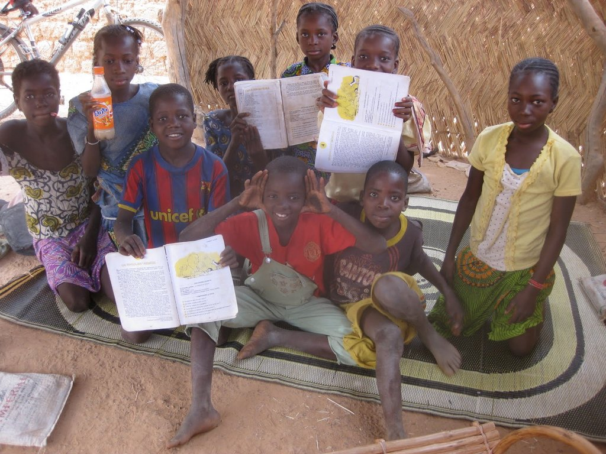
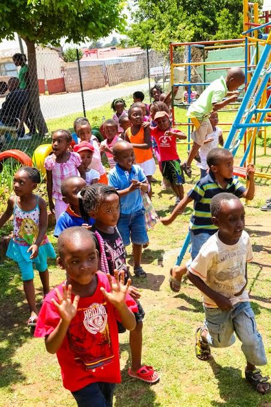
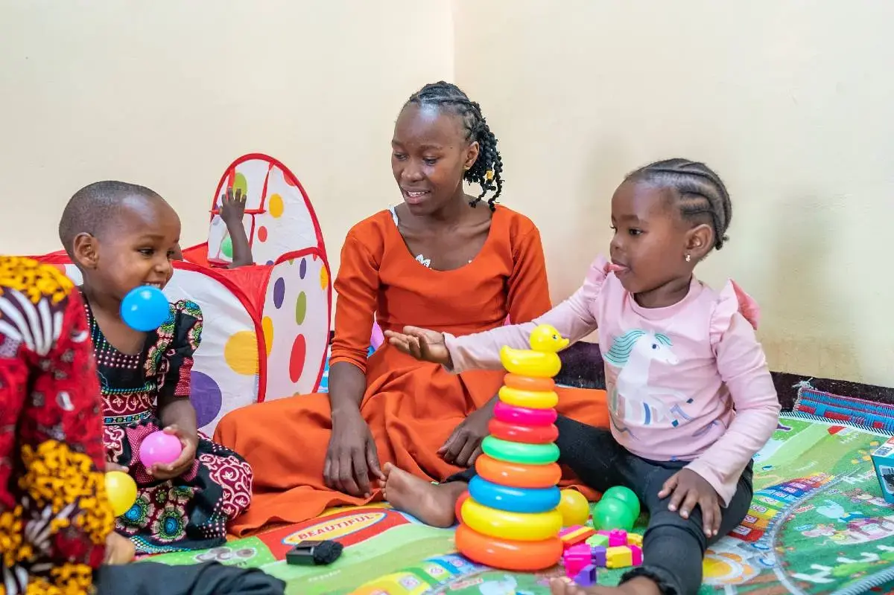

Reading circle
Children learning together during a weekly reading circle in Wakiso District.
Photos from reading circles, caregiver sessions and safe space activities across Wakiso, Mukono and Jinja districts.
Children learning together during a weekly reading circle in Wakiso District.

Families and volunteers gather for a community reading day in Wakiso District.

Reading circles open across Mukono and Jinja districts, reaching more children.

A regular place for children ages 6–12 to learn together.

Caregiver-led wellbeing sessions helping parents support learning at home.

Community centers hosting activities that keep children included and safe.
Each photo captures a real moment from our programs — children learning, caregivers supporting, and communities coming together.